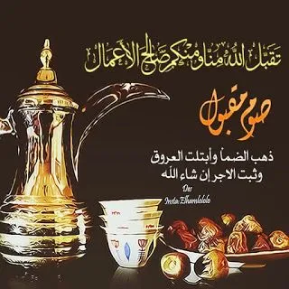

عنوان
صوم رمضان :
صوم رمضان هو الركن الرابع صوم رمضان هو التعبد لله سبحانه وتعالى بترك الأكل والشرب والجماع من طلوع الفجر إلى غروب الشمس هذا هو الصيام أن يتعبد الإنسان لله بترك هذه الأشياء لا أن يتركها على العادة أو من أجل البدن ولكنه يتعبد لله بذلك يمسك عن الطعام والشراب والنكاح وكذلك سائر المفطرات من طلوع الفجر إلى غروب الشمس من هلال رمضان إلى هلال شوال، وصيام رمضان أحد أركان الإسلام هذه منزلته في دين الإسلام وهو فرض بإجماع المسلمين لدلالة الكتاب والسنة على ذلك، يقول الله تعالى: ﴿يَاأَيُّهَا الَّذِينَ آمَنُوا كُتِبَ عَلَيْكُمُ الصِّيَامُ كَمَا كُتِبَ عَلَى الَّذِينَ مِنْ قَبْلِكُمْ لَعَلَّكُمْ تَتَّقُونَ ﴾ [البقرة: 183]، فوجه الله الخطاب للمؤمنين لأن صيام رمضان من مقتضيات الإيمان ولأن صيام رمضان يكمل به الإيمان ولأن ترك صيام رمضان ينتقص به الإيمان.
